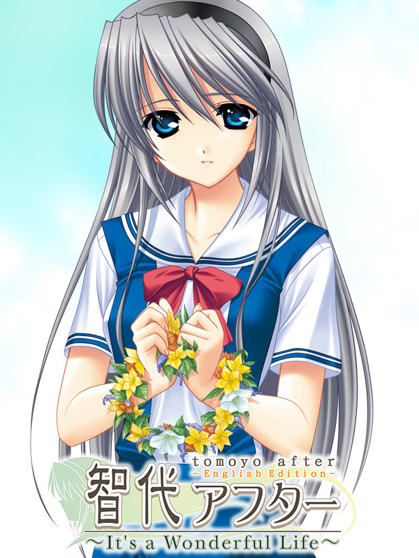

Tomoyo After ~It's a Wonderful Life~ English Edition
Tomoyo After ~It's a Wonderful Life~ English Edition
Details
|  | |
| Playtime | Not Played |
| Last Activity | Never |
| Added | 12/30/2023 6:40:47 |
| Modified | 12/31/2023 8:34:43 |
| Completion Status | Not Played |
| Library | Steam |
| Source | Steam |
| Platform | PC (Windows) |
| Release Date | 4/30/2010 |
| Community Score | 97 |
| Critic Score | |
| User Score | |
| Genre | Adventure Role-playing (RPG) Strategy Visual Novel |
| Developer | Key |
| Publisher | Visual Arts |
| Feature | Single Player |
| Links | Steam |
| Tag | |
Description
A visual novel developed by Key
This is a sequel to CLANNAD, following Tomoyo's ending.
Tomoya, the protagonist, has started to work at a waste collection company in the outskirts of town. He recently begun living on his own, and enjoys a calm and happy life with his girlfriend Tomoyo.
One day Tomoyo's brother, Takafumi, brings his father's illegitimate child, Tomo, to Tomoya's apartment.
Tomo had been abandoned by her mother, and Tomoya and Tomoyo reluctantly decide they would look after her.
Furthermore, Takafumi's ex-girlfriend, Kanako, ran away from her home just before the start of summer vacation.
She too ends up staying in Tomoya's room.
Tomoya, Tomoyo, Tomo, Takafumi, Kanako.
And so begins the first and the last summer these five people will spend together.
"A never ending love does exist, I know it..."
Tomoyo
The homely heroine who supports Tomoya, who has just joined the workforce out of high school.
She is actually very good at fighting and would win even against a group of people ganging up on her.
"It's like a curse born of my mistake..."
Takafumi
Tomoyo's brother. He is very well-versed with computers.
Against Tomoya's wishes, he set up a computer in the room and visits to sue it frequently.
"If something like that doesn't exist... It's better to enjoy life as much as you can."
Kanako
A girl who ran away from home, unhappy with her mother's upcoming remarriage.
She apparently used to date Takafumi and has a foul mouth.
"Then make up with a kiss."
Tomo
The illegitimate child of Tomoyo's father. An innocent young girl who would believe in anything.
Tomoyo After features a fully voiced story and stars the phenomenal voice talents of Hikaru Isshiki (Little Busters!, The Fruit of Grisaia) and Yuichi Nakamura (CLANNAD anime)
Dungeon & Takafumis
Featuring the characters of the main story in a fantasy setting, "Dungeon & Takafumis" is a fully-featured, comedic strategy RPG that will add hours to your experience
Tomopedia
Newly added to the English Edition, Tomopedia provides insight into Japanese culture and explanations for cultural references that you may come across in the story.
Game Brand: Key
Game Design: Jun Maeda
Scenario: Jun Maeda, Leo Kashida
Illustration: Fumio
Music: Shinji Orito, Magome Togoshi, Jun Maeda
Title: "Light colors"
Lyrics: Jun Maeda
Composition: Shinji Orito
Arrangement: Kazuya Takase (I've)
Vocals: Lia
Story
This is a sequel to CLANNAD, following Tomoyo's ending.
Tomoya, the protagonist, has started to work at a waste collection company in the outskirts of town. He recently begun living on his own, and enjoys a calm and happy life with his girlfriend Tomoyo.
One day Tomoyo's brother, Takafumi, brings his father's illegitimate child, Tomo, to Tomoya's apartment.
Tomo had been abandoned by her mother, and Tomoya and Tomoyo reluctantly decide they would look after her.
Furthermore, Takafumi's ex-girlfriend, Kanako, ran away from her home just before the start of summer vacation.
She too ends up staying in Tomoya's room.
Tomoya, Tomoyo, Tomo, Takafumi, Kanako.
And so begins the first and the last summer these five people will spend together.
Characters
"A never ending love does exist, I know it..."
Tomoyo
The homely heroine who supports Tomoya, who has just joined the workforce out of high school.
She is actually very good at fighting and would win even against a group of people ganging up on her.
"It's like a curse born of my mistake..."
Takafumi
Tomoyo's brother. He is very well-versed with computers.
Against Tomoya's wishes, he set up a computer in the room and visits to sue it frequently.
"If something like that doesn't exist... It's better to enjoy life as much as you can."
Kanako
A girl who ran away from home, unhappy with her mother's upcoming remarriage.
She apparently used to date Takafumi and has a foul mouth.
"Then make up with a kiss."
Tomo
The illegitimate child of Tomoyo's father. An innocent young girl who would believe in anything.
Features
Fully voiced storyTomoyo After features a fully voiced story and stars the phenomenal voice talents of Hikaru Isshiki (Little Busters!, The Fruit of Grisaia) and Yuichi Nakamura (CLANNAD anime)
Dungeon & Takafumis
Featuring the characters of the main story in a fantasy setting, "Dungeon & Takafumis" is a fully-featured, comedic strategy RPG that will add hours to your experience
Tomopedia
Newly added to the English Edition, Tomopedia provides insight into Japanese culture and explanations for cultural references that you may come across in the story.
Staff
Game Brand: Key
Game Design: Jun Maeda
Scenario: Jun Maeda, Leo Kashida
Illustration: Fumio
Music: Shinji Orito, Magome Togoshi, Jun Maeda
Theme song
Title: "Light colors"
Lyrics: Jun Maeda
Composition: Shinji Orito
Arrangement: Kazuya Takase (I've)
Vocals: Lia